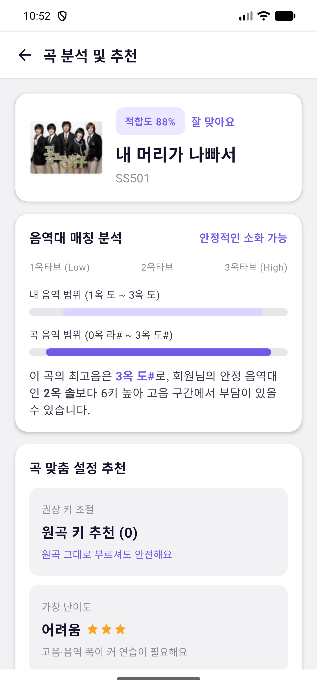

VOICE ANALYSIS
내 목소리에도
지도가 있어요.
낼 수 있는 음과 편안하게 부르는 음은 다르니까.
전체 음역과 안정 음역을 구분해, 내 목소리의 범위를 한눈에 확인하세요.
- 전체 음역과 안정 음역 시각화
- 음역별 특성을 담은 분석 리포트
- 목소리를 이해하는 음색 분석
내 목소리를 읽는 시간
가능 음역보다
편안한 음역에 집중.
편안한 음역에 집중.
YOUR VOICE. YOUR MUSIC.
내 목소리를 알면, 노래가 더 즐거워지니까.
음역과 음색 분석부터 맞춤곡 추천, 연습까지 MICON과 함께하세요.
목소리를 이해하는 나만의 뮤직 파트너
당신의 다음 애창곡,
목소리 안에 있어요.


실제 Android 앱의 개발 단계 캡처입니다. 화면 속 분석 수치와 곡은 예시이며, 현재 버전과 다를 수 있습니다.
WHY MICON
좋아하는 노래와 편하게 부를 수 있는 노래는 다를 수 있어요.
MICON은 그 사이에서, 내 목소리에 맞는 시작점을 찾아줍니다.
“이 노래, 키가 너무 높은데…”
“한 키만 더 내려볼까?”
“결국 또 부르던 노래네.”
ONE VOICE, THREE POSSIBILITIES
분석, 추천, 연습. 흩어져 있던 노래의 경험을 하나로.
VOICE ANALYSIS
낼 수 있는 음과 편안하게 부르는 음은 다르니까.
전체 음역과 안정 음역을 구분해, 내 목소리의 범위를 한눈에 확인하세요.
PERSONALIZED DISCOVERY
인기 차트에서 무작정 고르지 않아도 괜찮아요.
내 음역과 음색에 맞는 곡, 그리고 부르기 좋은 키를 함께 찾아보세요.

PRACTICE & GROW
감으로만 연습하지 않도록.
목표 음정과 내 음정을 실시간으로 비교하고, 연습 기록을 돌아보며 다음 한 곡을 준비하세요.
A CLOSER LOOK
앱의 실제 개발 화면을 한 장씩 살펴보세요.
전체 음역, 편안한 음역과 음역별 안정성을 리포트로 확인하는 화면입니다.
Android 앱 개발 캡처MAKE IT YOURS
안내에 따라 음역을 측정하고
노래로 내 목소리의 특징을 알아봐요.
추천곡과 적합도를 살펴보고
편안하게 부를 키를 확인해요.
실시간 피드백으로 연습하고
기록을 보며 달라진 나를 만나요.
BEHIND YOUR VOICE
음역을 측정하고, 음색의 특징을 비교하고,
부르는 순간의 음정을 읽습니다.
복잡한 분석은 MICON에 맡기고 노래에 집중하세요.
낼 수 있는 음의 범위와 목소리의 특징을 서로 다른 관점에서 분석합니다.
사용자의 음역과 곡의 음역을 비교해 적합도와 추천 키를 제안합니다.
기기에서 음정을 추출하고 목표 음정과 비교해 실시간 연습을 돕습니다.
GOOD TO KNOW
내 목소리에 맞는 곡과 키를 찾는 것부터 시작할 수 있어요. MICON은 현재의 음역을 이해하고, 목표 음정과 내 음정을 비교하며 연습할 수 있도록 돕는 서비스입니다.
취향은 듣고 싶은 노래의 기준이고, MICON의 맞춤 추천은 내 음역과 음색도 함께 고려합니다. 좋아하던 곡의 적합도를 확인하거나, 내 목소리와 어울리는 다른 곡을 발견할 수 있어요.
이 페이지는 MICON을 소개하는 랜딩페이지입니다. 음성 측정·분석과 실시간 노래 연습은 Android 앱에서 제공하는 기능입니다. 이 웹페이지에서는 마이크를 사용하거나 음성을 수집하지 않습니다.
네. MICON Android 저장소에 포함된 실제 개발 단계 캡처입니다. 소개를 위해 새로 그린 제품 목업이 아닙니다. 캡처는 과거 개발 버전이며 화면 속 곡과 분석값은 예시이므로, 현재 앱의 구성 및 결과와 다를 수 있습니다.